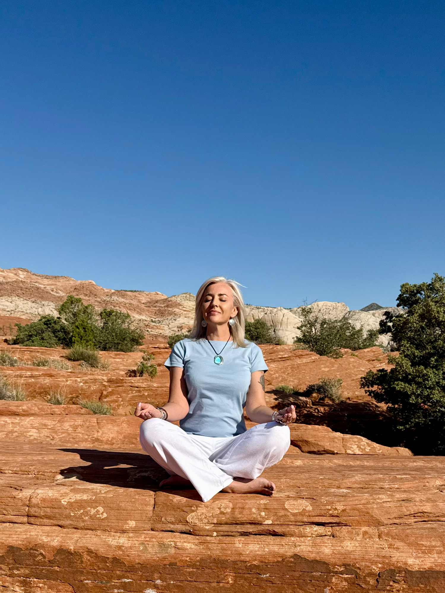

Meditations
OSHO Active Meditations®
OSHO Active Meditations® are a unique form of meditation created specifically for the modern human being.
OSHO® observed that the contemporary mind carries a great deal of accumulated tension, suppressed emotions and constant mental activity. Because of this, simply sitting in silence can often feel difficult or unnatural.
Active meditations begin with movement, breath, sound or expression, allowing the body to release stored tension before entering stillness.
Through active stages such as breathing, shaking, dancing, sound or spontaneous movement, the body releases accumulated stress and energy. When the body becomes free and relaxed, silence and awareness arise naturally.
OSHO® often emphasized that meditation is not something we force or achieve - it is something that happens when the body and mind become relaxed, open and available to awareness.
Every person's experience will be different. There is no right or wrong way to experience the process.
Active meditations invite the whole body into meditation, making them especially accessible for people living busy, modern lives.
Facilitator Training
I completed the official OSHO Active Meditations® Facilitator Training, developed by OSHO® International, learning the original structure and guidance for facilitating these meditation techniques.
About the Experience
Each meditation follows a specific structure that guides the practitioner from movement into stillness.
The process may include breathing, shaking, movement, sound, dance or silence. The invitation is simply to participate fully in each stage and allow the experience to unfold naturally.
Meditation happens naturally when energy begins to move freely.
OSHO Active Meditations® Offered
- OSHO Dynamic Meditation®
- OSHO Kundalini Meditation®
- OSHO Nadabrahma Meditation
- OSHO Vipassana Meditation
- OSHO Nataraj Meditation
- OSHO Devavani Meditation
- OSHO Gibberish Meditation